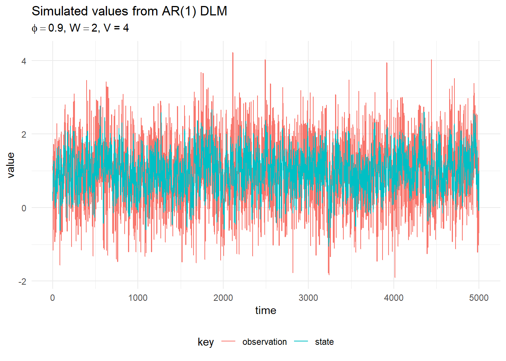
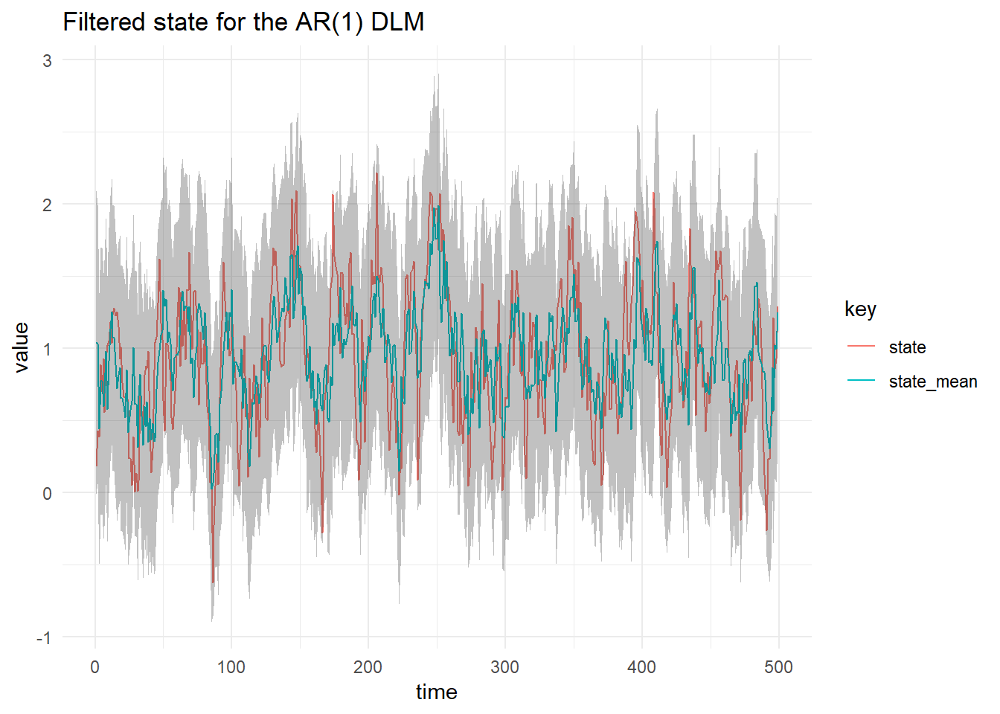
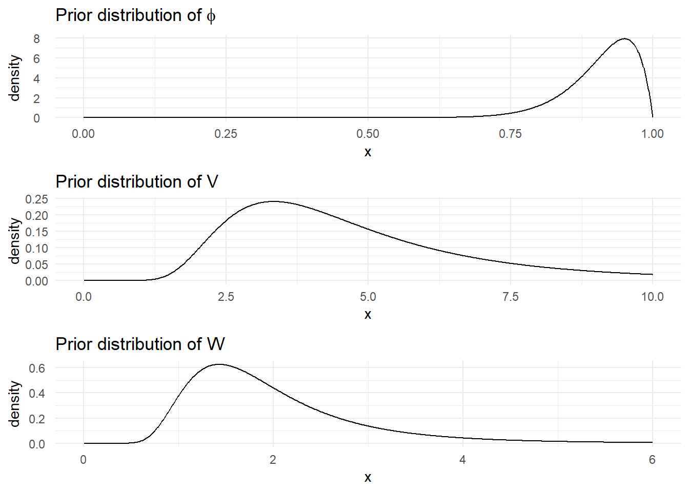
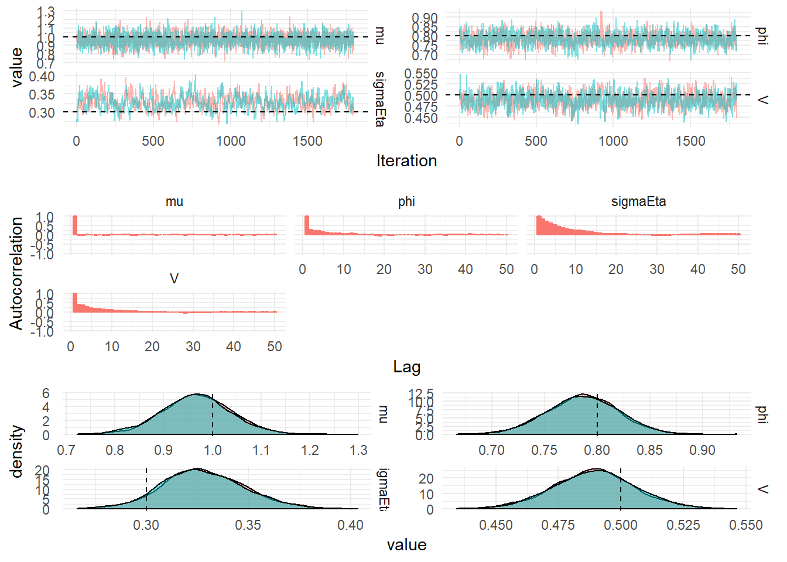
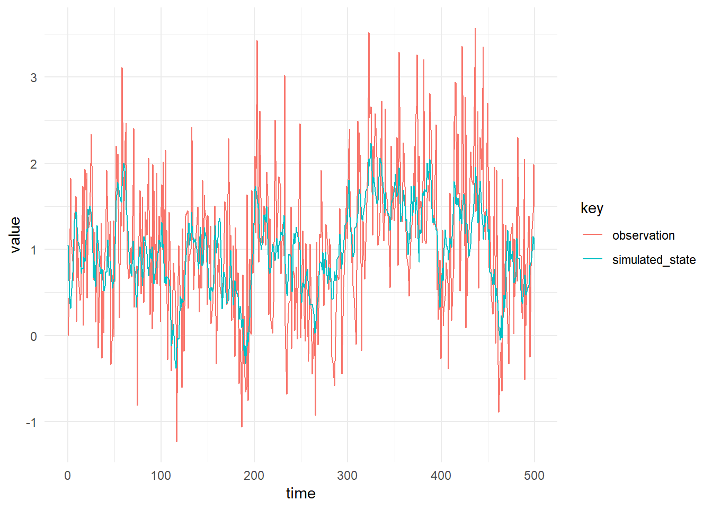
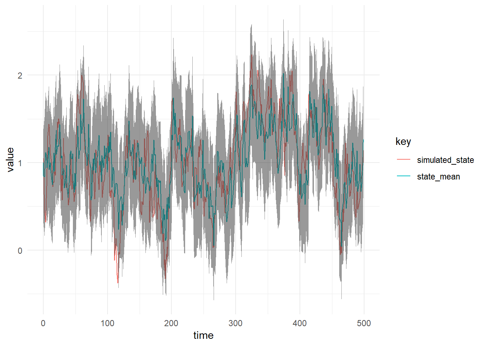
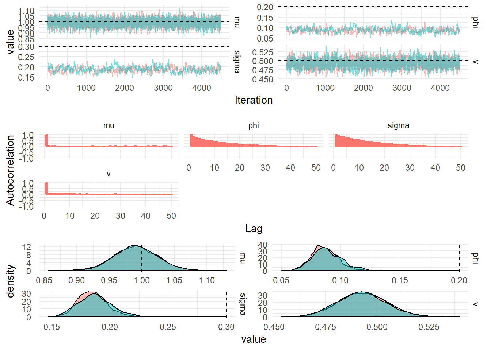

\[\begin{align} Y_t &= x_t + v_t, \quad v_t \sim \mathcal{N}(0, V), \\ \alpha_t &= \phi (\alpha_{t-1}-\mu) + eta_t, \quad w_t \sim \mathcal{N}(0, \sigma_\eta), \\ \alpha_0 &\sim \mathcal{N}(m_0, C_0). \end{align}\]
The code required to simulate from this model is given below:
import core.dlm.model._
import breeze.linalg.{DenseMatrix, DenseVector, diag}
val mod = Dlm.autoregressive(phi = 0.9)
val p = Dlm.Parameters(
DenseMatrix(4.0),
DenseMatrix(2.0),
DenseVector(0.0),
DenseMatrix(1.0))
val data = Dlm.simulateRegular(0, mod, p, 1.0).
steps.
take(1000).
toVectorThe figure below shows a plot of 100 simulations:

To perform Kalman Filtering on a Vector of Data, we simply discard the state from the simulated data and pass it into the KalmanFilter.filter function:
val filtered = KalmanFilter.filter(mod, data.map(_._1), p)
The figure below shows the prior distributions for the parameters and the diagnostics from 100,000 iterations of the MCMC algorithm. A Beta prior and proposal is used in a Metropolis-Hastings step to learn the autoregressive parameter \(\phi\).
import breeze.stats.distributions._
val priorV = InverseGamma(5.0, 20.0)
val priorW = InverseGamma(6.0, 10.0)
val priorPhi = new Beta(20, 2)First we define the prior distributions for the parameters, the prior for V and W are plotted in the Figure below

Next we can use the prior distribution to construct at Dlm.Parameters object which can be drawn from to initialise the Markov chain.
val prior = for {
v <- priorV
w <- priorW
} yield Dlm.Parameters(DenseMatrix(v), DenseMatrix(w), p.m0, p.c0)Next we create a single step of the Markov Chain which samples the value of \(\phi\) using a Metropolis Hastings step. The function updateModel is used to change the value of the system evolution matrix \(G\) to include the new value of the autoregressive parameter \(\phi\).
val step = (s: (Double, GibbsSampling.State)) => for {
newS <- GibbsSampling.dinvGammaStep(GibbsSampling.updateModel(mod, s._1),
priorV, priorW, data.map(_._1))(s._2)
phi <- GibbsSampling.samplePhi(priorPhi, 1000, 0.5, newS)(s._1)
} yield (phi, newS)Next the inital parameter distribution can be defined as:
val init = for {
p <- prior
phi <- priorPhi
state <- Smoothing.ffbs(mod, data.map(_._1), p)
} yield (phi, GibbsSampling.State(p, state))This allows us to intialise the MCMC with a draw from the prior distribution. Finally we can construct the Markov Chain:
val iters = MarkovChain(init.draw)(step).steps.take(100000)The figure below shows the posterior distributions of the static parameters in the autoregressive DLM. 10,000 iterations are discarded as burnin and 100,000 samples are taken from the Markov Chain.

The Ornstein-Uhlenbeck process is a continuous time autoregressive process. Define a partially observed Markov process with an OU latent-state as:
\[\begin{align*} Y_t &= x_t + v_t, \quad v_t \sim \mathcal{N}(0, V), \\ \textrm{d}\alpha_t &= \phi(\alpha_t - \mu)\textrm{d}t + \sigma \textrm{d}W_t. \end{align*}\]The Figure below shows a simulation from the OU process DLM with observation variance \(V = 0.5\), \(\phi = 0.2\), \(\mu = 1.0\) and \(\sigma = 0.3\). To simulate the OU process DLM, define parameters of the OU process and use the transition kernel defined in the StochasticVolatility class. The observation distribution is Gaussian with variance \(V = 0.5\). Since this process can be simulated at arbitrary time points, a vector of random times is simulated by defining the difference between the observations to be deltas. Then the state, \(\alpha_0\) is initialised at the stationary solution of the OU process and a scan is used to simulate the data.
import dlm.core.model._
val p = SvParameters(0.2, 1.0, 0.3)
def stepDlm(t: Double, dt: Double, x: Double) =
for {
x1 <- StochasticVolatility.stepOu(p, x, dt)
y <- Gaussian(x1, math.sqrt(0.5))
} yield (t + dt, y, x1)
val deltas = Vector.fill(5000)(scala.util.Random.nextDouble())
val init = Gaussian(p.mu, math.sqrt(p.sigmaEta * p.sigmaEta / 2 * p.phi))
val sims = deltas.scanLeft((0.0, 0.0, init.draw)) {
case ((t, y, xt), dt) =>
stepDlm(t + dt, dt, xt).draw
}

The figure below shows a Kalman Filter for the OU process, since the transition kernel of the OU process is known and given by a Gaussian distribution the Kalman Filter can be performed:
val filtered = FilterOu.filterUnivariate(ys, Vector.fill(ys.size)(0.5), p)
Parameter inference is performed using the Kalman filter to calculate the marginal likelihood of the OU process which is then used in a Metropolis-Hastings algorithm to determine the static parameters of the latent state, \(\phi, \mu\) and \(\sigma\). The value of the observation variance, \(V\), is determined using a Gibbs step:
val p = SvParameters(0.2, 1.0, 0.3)
val priorPhi = new Beta(2.0, 5.0)
val priorMu = Gaussian(1.0, 1.0)
val priorSigma = InverseGamma(5.0, 1.0)
val priorV = InverseGamma(2.0, 2.0)
val f = (dt: Double) => DenseMatrix(1.0)
val step = (s: (StochasticVolatilityKnots.OuSvState, DenseMatrix[Double])) =>
for {
theta <- FilterOu.ffbs(s._1.params, ys, Vector.fill(ys.size)(s._2(0, 0)))
st = theta.map(x => (x.time, x.sample))
(phi, acceptedPhi) <- samplePhiOu(priorPhi, s._1.params, st, 0.05, 0.25)(
s._1.params.phi)
(mu, acceptedMu) <- sampleMuOu(priorMu, 0.2, s._1.params, st)(
s._1.params.mu)
(sigma, acceptedSigma) <- sampleSigmaMetropOu(priorSigma,
0.1,
s._1.params,
st)(s._1.params.sigmaEta)
v <- GibbsSampling.sampleObservationMatrix(
priorV,
f,
ys.map(x => DenseVector(x._2)),
st.map { case (t, x) => (t, DenseVector(x)) })
accepted = DenseVector(Array(acceptedPhi, acceptedMu, acceptedSigma))
} yield
(StochasticVolatilityKnots.OuSvState(SvParameters(phi, mu, sigma),
theta,
s._1.accepted + accepted),
v)
val initState = FilterOu.ffbs(p, ys, Vector.fill(ys.size)(priorV.draw))
val init = (StochasticVolatilityKnots.OuSvState(p,
initState.draw,
DenseVector.zeros[Int](3)),
DenseMatrix(priorV.draw))
val iters = MarkovChain(init)(step)
